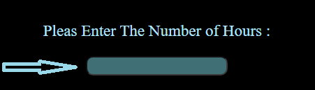
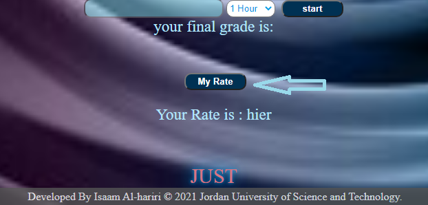

هنا في الخانة الأولى ندخل عدد ساعات الفصل المراد حساب المعدل له

هنا في الخانات التالية وعددها سبعة ندخل علامة المادة من 4.2 على سبيل المثال 3.7 وهكذا
فلك حرية الاختيار حيث يظهر علامة المادة النهائية فقط start اما بخصوص زر
RATE أما هنا و بعد ادخال كافة التفاصيل السابقة سيظهر معدلك الفصلي عند الضغط على زر
